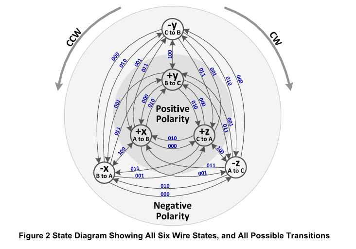
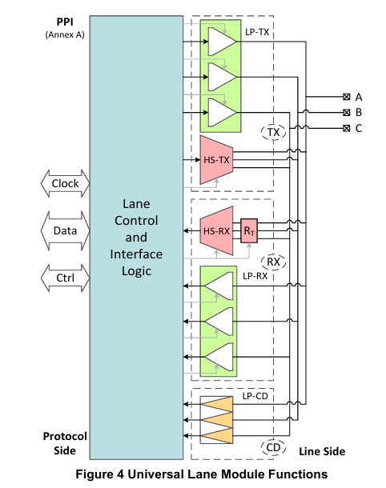
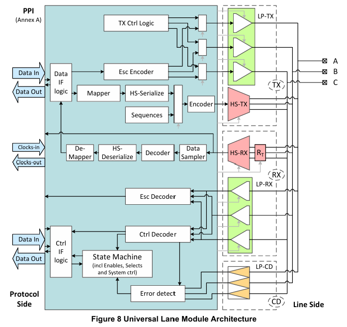

MIPI-CPHY-1
本文最后更新于：2024年5月4日 下午
- 参考
1. C-PHY 概述
C-PHY 通过使用一种称为”三相符号编码”技术，三根线A\B\C被称为一个Lane，每根传输2.28bit数据。
与DPHY相同，存在两个模式：High-Speed Mode 和 Low Power Mode.
- HS模式用于高速数据传输，电压摆幅较小，如250mV。
- LP模式用于传输控制信号，以及在Escape模式中，可以进行LPDT(低速数据传输)；电压摆幅较大，如1.2V.
Lane Signal States
Lane的三根线ABC，假设每根线的电压可以有1/4V、3/4V、1/2V三种情况，那么三根线组合输出有6种情况：+x、-x、+y、-y、+z、-z，如下表所示。

从其中一种导线状态到另一导线状态共有五种转换方式，如下图所示。
在C-PHY种，符号值是从一个UI(Unit Interval,equal to the duration of any HS state)到下一个UI导线状态变化的编码。即有5种编码方式，分别是000、001、010、011、100.
- 变化规律
- bit[2]:表示只有线态正负之间的跳变，其他不变，+x与-x之间，+y与-y之间。此时bit[1:0]=2’b00，Flip
- bit[1]: 0表示线态跳变是逆时针，1表示顺时针，Rotation
- bit[0]: 1表示线态之间极性发生变化，且线态xyz符号也发生了变化，Polarity
- 变化规律
C-PHY的HS模式下，数据传输的最小单元是两个字节即16bit，而16bit至少需要7个5进制符号进行传输。因此每个符号可传输2.28bit数据。
$$
log_25=2.3219… \
7*log_25=16.2533\ bit \
16/7 = 2.28…
$$

数据传输流程如下图
TX端，将16bit数据通过Mapper映射为7个5进制的Symbol，共21bit。
之后通过并-串转换器，将7个Symbol转化为串行的，输出为3bit。
符号编码器根据当前的3bit符号值以及上一个UI Wire State的值，将符号转换为这个UI的Wire State。
RX端，符号解码器根据当前UI的Wire State和上一个UI Wire State，计算出接收到的符号值。
之后通过串-并转换器，及Demapper，最后得到16bit数据。

2. C-PHY 架构
2.1 Lane Module
通用Lane结构如下图所示，与D-PHY相同，集成了5个功能
LP-TX、LP-RX、HS-TX、HS-RX、LP-CD。传输方向
C-PHY中定义Primary和Secondary
- 对于单向Lane，Primary是数据源那侧，Secondary是接收数据一侧。
- 对于双向Lane，数据不仅可以从Primary到Secondary侧，还可以从Secondary接收数据。
双向Lane
- Bi-Directional 双向Lane主要有以下两种情况
- 高速模式
- 低功耗Escape模式
- 如果双向Lane模块中HS模式下没有反向功能，那么应该添加LP Escape模式下的反向功能。(似懂非懂)
- 如果双向Lane模块中HS模式下有反向功能，那么也应该添加LP Escape模式下的反向功能。
- Bi-Directional 双向Lane主要有以下两种情况
几种传输方向配置
（1）下图为多条Lane，正方向数据传输实例。注意，C-PHY规范并不要求所有的Lane都处于活动状态。

（2）下图为两条单向通信的Lane，但通信方向相反。
- 与双向Lane不同，两个相反方向的Primary和Secondary侧不同。
- 可以认为两个Lane是独立的，因此两条Lane之间的比特率不必匹配；但在实际实现中，为方便共享一些信号，最好匹配。

（3）下图为多条双向通信的Lane，C-PHY规范并不要求所有的Lane都是相同方向。

（4）下图为多条混合模式，混合单向和双向Lane。

下图是具有Control and Interface Logic (CIL)功能的通用Lane模块图。
具体实现可以根据设计要求进行裁剪，具体可参考协议P19.

2.2 物理层协议接口
一个完整的链路除了Lane Module外，PHY适配层，它将所有的Lane、时钟单元以及协议接口连接在一起。
- 其中PPI是每个Lane与PHY适配层的协议接口，APPI是抽象出的物理层协议接口，它包含了所有Lane的接口。